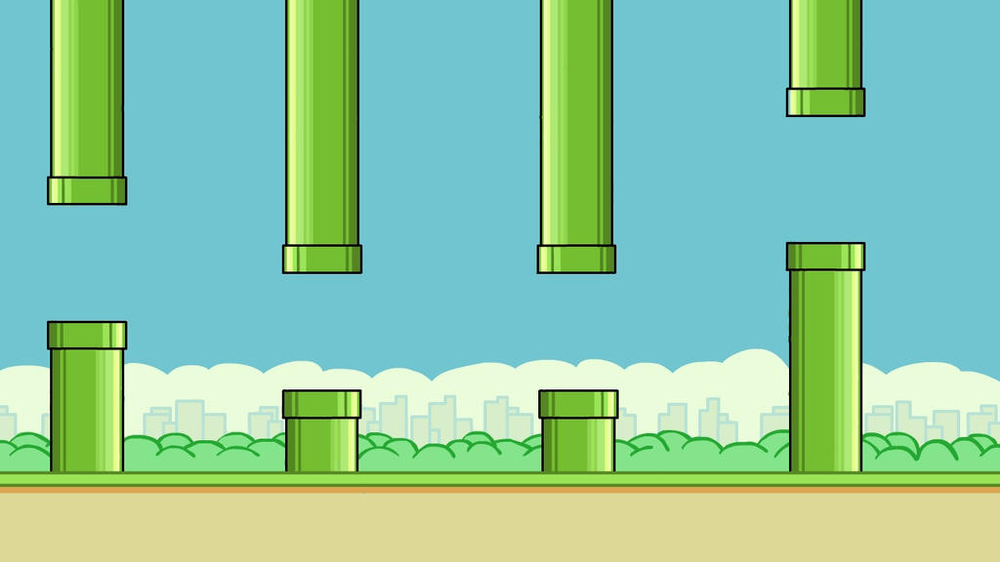
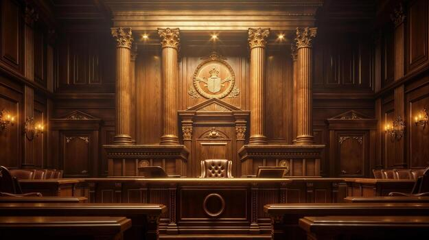
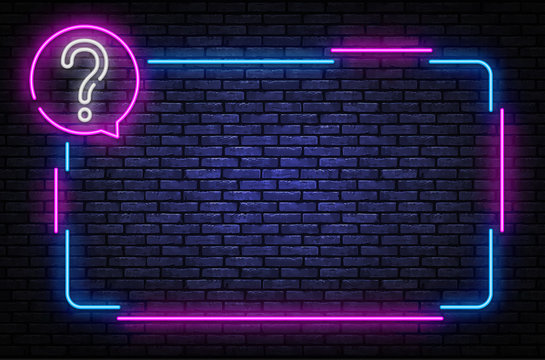
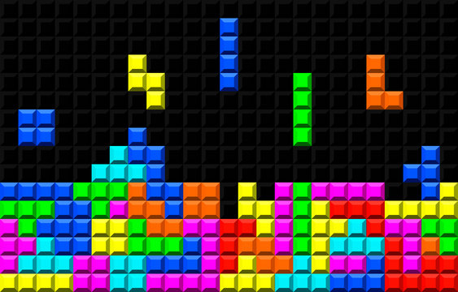
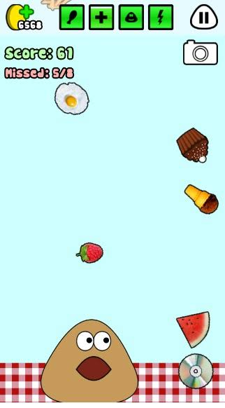

Flappy bird

Tribunal Game

My first quiz

Tetris

Cobrinha

FoodDrop

Ainda em desenvolvimento





Bom, primeiramente tenho que agradecer ao Morrinho, pois a ideia do jogo do tribunal apenas surgiu graças a ele. Agradecer ao Patrisks, pqq me ajudou muito no desenvolvimento do site, com dicas e tals. Além da ajuda inestimável em outros sites, como o tlou wiki. Tive que fazer muitas HORA EXTRAS, além de negar várias SOBREMESAS, APENAS DESSA VEZ para poder terminar o site, finalmente sinto que fiz algo bom.